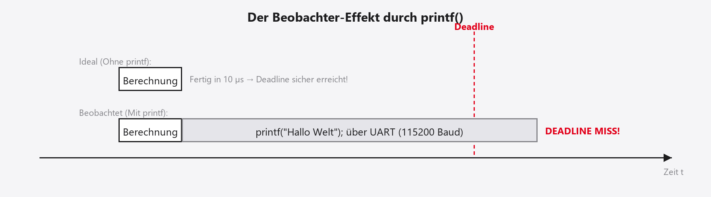
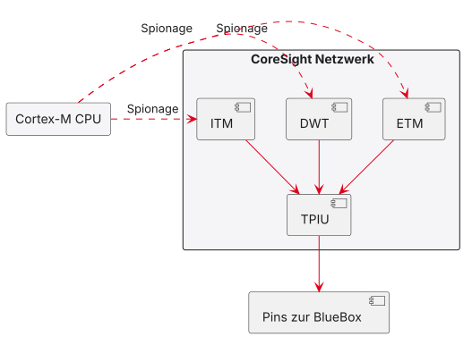
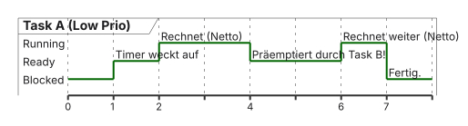

07 · Tracing & Timing-Analyse
Non-Intrusive Observation, CoreSight und BlueBox · EZS · DHBW Stuttgart
Prof. Dr.-Ing. Daniel Klünder
Willkommen in der Systemanalyse!
- Herzlich Willkommen zum 7. Termin unserer Vorlesung.
- Letzte Woche: Wir haben zwei Kerne in einem Chip vernetzt.
- Die Realität im Labor: Läuft das wirklich so, wie wir uns das gedacht haben?
- Heute verlassen wir die reine Programmierung.
- Wir wechseln in die Rolle des Analysten und System-Architekten.
- Ziel: Wir beweisen mathematisch und physikalisch, dass unsere Deadlines eingehalten werden.
Agenda für heute
- Recap: Multicore-Kommunikation und ihre Latenzen.
- Die Grenzen der Sichtbarkeit: Warum klassisches Debugging (
printf) tödlich ist. - Der Heisenbug (Der Beobachter-Effekt der IT).
- ARM CoreSight: Wie Chips intern Daten nach außen funken.
- DWT, ITM und der heilige Gral: ETM (Instruction Trace).
- Timing-Metriken: WCET, Slack, Interrupt-Latenz, Netto vs. Brutto.
- TASKING BlueBox, winIDEA und OS-Awareness (
pxCurrentTCB).
Recap: Unser Multicore-System
- Letzte Woche auf dem STM32H755:
- Cortex-M7 (Bare-Metal) setzt
m7_ready = 1. - Cortex-M4 (FreeRTOS) wartet auf das Flag.
- Cortex-M7 (Bare-Metal) setzt
- Wir haben die MPU konfiguriert, um Cache-Kohärenz zu erzwingen.
- Das System lief flüssig im Terminal.
- Die ungelösten Fragen:
- Wie viele Mikrosekunden vergingen wirklich zwischen dem Schreiben des M7 und dem Aufwachen des M4?
- Hat FreeRTOS auf dem M4 beim Aufwachen sofort geschaltet, oder hat eine andere Task kurz blockiert?
Der Beobachter-Effekt in der Physik
- Aus der Quantenmechanik (und dem Alltag):
- “Wer ein System misst, verändert unweigerlich dessen Zustand.”
- Beispiel: Prüfen des Reifendrucks.
- Um zu messen, wie viel Luft im Reifen ist, müssen Sie das Ventil öffnen und das Manometer anschließen.
- Dabei entweicht ein kleines bisschen Luft!
- Der Druck nach der Messung ist nicht mehr derselbe wie vor der Messung.
- Gilt dieses physikalische Gesetz auch in der Software-Entwicklung? JA!
Klassisches Debugging: Die printf-Gefahr
- Die häufigste (und schlechteste) Debugging-Methode in C:
printf("Task A ist hier! Zeit = %d\n", ticks); - Was passiert physikalisch?
- Das Wort „Hallo“ hat 5 Bytes; bei 8N1 sind das \(5 \times 10 = 50\) Bits (Start- und Stop-Bit).
- Bei Standard \(115200\) Baud dauert ein Bit \(\approx 8{,}68\,\text{µs}\).
- „Hallo“ senden blockiert das System für \(\approx 430\,\text{µs}\)!
- Während Sie versuchen zu messen, ob Ihre \(50\,\text{µs}\) Frist gehalten wird, halten Sie das System für \(430\,\text{µs}\) an!
Visualisierung: Der Beobachter-Effekt

- Ideal: Die Berechnung ist extrem kurz, die Deadline wird souverän eingehalten.
- Beobachtet: Der „harmlose“
printf-Aufruf bläht die Laufzeit so massiv auf, dass das System die rote Deadline verpasst (System-Crash!). - Hinweis: Die Abbildung zeigt illustrativ
printf("Hallo Welt"); die Rechnung oben nutzt bewusst das kürzere „Hallo“ (5 Bytes \(\rightarrow\) \(\approx 430\,\text{µs}\)).
Klassisches Debugging: Breakpoints
- Wenn
printfverboten ist, nutzen wir doch den Debugger (Breakpoints!). - Sie setzen in der IDE einen roten Punkt in Zeile 42.
- Was passiert in der CPU?
- Die Hardware hat spezielle Komparator-Register.
- Wenn der Program Counter (
PC) die Adresse von Zeile 42 erreicht, löst die CPU einen “Halt” aus.
- Die CPU stoppt (Core Halted):
- Es wird kein Assembler-Code mehr ausgeführt.
- Sie können gemütlich im RAM Variablen ansehen.
- Klingt perfekt, oder? Es gibt nur ein gigantisches Problem…
Das Problem des “Halt-States”
- Die CPU (der Code) stoppt. Die physikalische Welt stoppt nicht!
- Während Sie in Ruhe Ihre Variablen ansehen:
- Der Motorläufer dreht sich weiter (Sensor-Flanken kommen an).
- Der UART-Port empfängt weiter Bytes (Der Puffer läuft über!).
- Hardware-Timer zählen munter weiter.
- Der Crash nach dem Resume (Play):
- Sie klicken auf “Play”. Die CPU erwacht.
- Plötzlich stehen 50 aufgestaute Hardware-Interrupts gleichzeitig vor der Tür.
- Das OS wird mit ISRs geflutet \(\rightarrow\) Stack Overflow oder Deadlock!
Der Heisenbug
- Durch diese Effekte entsteht eine spezielle Klasse von Softwarefehlern.
- Benannt nach Werner Heisenberg (Heisenbergsche Unschärferelation).
- Definition Heisenbug:
- Ein Bug, der verschwindet oder sein Verhalten verändert, sobald man versucht, ihn mit einem Debugger oder mit
printfzu isolieren.
- Ein Bug, der verschwindet oder sein Verhalten verändert, sobald man versucht, ihn mit einem Debugger oder mit
- Die Ursache in RTOS-Systemen:
- Der Fehler war ein “Timing-Fehler” (z. B. eine hauchdünne Race Condition).
- Durch das Anhalten oder Ausgeben von Text verändert sich das Timing so extrem, dass die Race Condition zufällig nicht mehr auftritt!
Der Workaround: Software Instrumentierung
- Wie haben wir uns in Termin 1 beholfen? Mit GPIO Toggling!
- Vor der Task: Pin auf HIGH. Nach der Task: Pin auf LOW.
- Vorteil: Extrem schnell (1-2 Taktzyklen). Zerstört das Timing kaum.
- Nachteile:
- Pin-Mangel: Sie haben keine 50 freien Pins, um 50 Tasks zu überwachen.
- Intrusiv: Sie verändern den Original-Code (
Toggle-Befehle im Source Code). - Cache-Effekte: Selbst eine Zeile Code mehr ändert das Compiler-Layout und kann den L1-Cache beeinflussen (Der Bug verschwindet wieder!).
Wir brauchen: Non-Intrusive Observation
- Um RTOS-Probleme zu finden, brauchen wir eine Methode, die:
- Die CPU nicht für Mikrosekunden blockiert.
- Die CPU niemals anhält (keine Breakpoints).
- Keinerlei Code-Änderungen im C-Sourcecode erfordert!
- Der Fachbegriff: Rückwirkungsfreie Beobachtung (Non-Intrusive).
- Wie ist das physikalisch auf einem Mikrocontroller möglich?
- \(\rightarrow\) Mit Hardware-Trace-Technologie!
Zusammenfassung Block 1
- Beobachter-Effekt: Jeder Versuch, Timing per Software zu messen, verändert das Timing.
printfist in der Echtzeit wegen massiver Latenzen (\(>100\,\text{µs}\)) streng verboten.- Breakpoints frieren die CPU ein, aber Peripherie/Interrupts laufen weiter \(\rightarrow\) Systemcrash bei Wiederaufnahme.
- Heisenbugs verbergen sich, wenn das Timing durch Debugging verschoben wird.
- Die Lösung muss zu \(100\%\) in Hardware integriert sein.
Hardware-Trace: ARM CoreSight
- ARM (der Designer des Cortex-M7/M4) hat ein gigantisches Debug-Netzwerk parallel zur CPU entworfen: CoreSight.
- CoreSight besteht aus dedizierten Silizium-Blöcken, die den CPU-Kern “ausspionieren”.
- Sie lesen Bus-Daten, ohne den eigentlichen AHB/AXI-Bus der CPU zu belasten.

JTAG vs. SWD vs. Trace
- Bisher haben wir zum Flashen/Debuggen JTAG (alt, 5 Pins) oder SWD (Serial Wire Debug, modern, 2 Pins) genutzt
- SWD ist bidirektional: Der PC schickt einen Stopp-Befehl \(\rightarrow\) Chip stoppt \(\rightarrow\) PC fragt RAM ab \(\rightarrow\) Chip antwortet
- Trace-Daten hingegen sind ein gigantischer unidirektionaler Wasserfall!
- Der Chip feuert Millionen von Statusmeldungen pro Sekunde nach außen (Fire and Forget)
- Der PC (oder die BlueBox) muss extrem schnell sein, um alles aufzufangen!
Modul 1: Das ITM (Instrumentation Trace)
- Das „bessere
printf“ - Die CPU schreibt einen Wert in ein spezielles ITM-Hardware-Register
- Der Unterschied zu UART:
- Der Schreibzugriff auf das ITM-Register dauert typischerweise einen Taktzyklus (wenige Nanosekunden)!
- Die CPU rechnet sofort weiter (asynchroner Trace).
- Caveat: Bei vollem ITM-FIFO kann der Schreibzugriff kurz stallen.
- Die CoreSight-Hardware verpackt das Byte im Hintergrund und schickt es asynchron nach draußen
- Latenz-Problem von \(430\,\text{µs}\) gelöst! (Nur noch winzige Intrusion im Code)
Modul 2: Das DWT (Data Watchpoint & Trace)
- Jetzt wird es komplett rückwirkungsfrei (0 Code-Änderungen)!
- Das DWT beobachtet den RAM-Speicherbus der CPU wie ein Scharfschütze
- Sie konfigurieren im externen Tool: „Beobachte die Adresse von
sd.m7_ready.“ - Jedes Mal, wenn die CPU diesen Speicherbereich beschreibt oder liest, erzeugt das DWT ein Hardware-Paket (inklusive des neuen Wertes!)
- Die CPU bekommt davon nichts mit (0 Taktzyklen Overhead!)
- Perfekt, um globale Variablen im OS (z. B. Task-Zustände) zu überwachen
Modul 3: Das ETM (Embedded Trace)
- Der Heilige Gral der Embedded-Entwicklung
- Das ETM protokolliert die Programmausführung (Instruction Trace)
- Es verrät uns lückenlos, welche C-Zeile (bzw. Assembler-Instruktion) die CPU gerade ausgeführt hat!
- Das Bandbreiten-Problem:
- Bei \(400\,\mathrm{MHz}\) führt die CPU \(400\,000\,000\) Befehle pro Sekunde aus
- Wenn jeder Befehl \(4\,\mathrm{Bytes}\) hat, bräuchten wir \(1{,}6\,\mathrm{GB/s}\) Bandbreite!
- Das schaffen die Pins des Chips nicht
- Wie löst ARM dieses Problem?
Die ETM-Kompression: Nur Sprünge!
- ARM komprimiert den ETM-Datenstrom extrem intelligent:
- Es wird nicht jeder Befehl gemeldet
- Die CPU läuft ohnehin strikt sequenziell von oben nach unten, bis ein „Sprung“ (Branch, If-Abfrage, Interrupt) auftritt
- Das ETM funkt nur: „Ich bin bei der If-Abfrage an Adresse
0x0800gesprungen (True) oder nicht gesprungen (False).“
- Das externe Tool am PC lädt die
.elf-Datei, kennt den C-Code und rekonstruiert am PC den exakten Pfad der CPU!
Die TPIU und der physikalische Stecker
- Alle Module (ITM, DWT, ETM) schicken ihre Daten zur TPIU (Trace Port Interface Unit)
- Die TPIU multiplext die Ströme und leitet sie an die Pins des STM32
- 1-Bit SWO (Serial Wire Output):
- Standard auf günstigen Nucleo-Boards
- Reicht für ITM (
printf) und ein paar DWT-Variablen — zu langsam für ETM!
- 4-Bit Parallel Trace Port:
- 4 Daten-Pins + 1 Clock-Pin (sehr schnell)
- Notwendig für volles ETM (Instruction Trace)
- Benötigt einen teuren, 20-poligen High-Density-Stecker auf dem Board
Zusammenfassung CoreSight
- Hardware-Trace ist völlig rückwirkungsfrei (Non-Intrusive).
- ITM: Die schnelle, saubere Alternative zu
printf(). - DWT: Hardware-Spionage auf exakten RAM-Adressen (ohne Code-Overhead).
- ETM: Rekonstruktion des gesamten C-Code-Pfades durch Protokollierung aller Sprünge (Branches).
- Um diese extremen Datenmassen aufzufangen, brauchen wir externe Profi-Hardware.
Die Pflicht zur Systemanalyse
- Warum treiben wir diesen immensen technischen Aufwand?
- Die Normen der Industrie:
- ISO 26262 (Automotive Functional Safety, bis ASIL D).
- DO-178C (Luftfahrt).
- IEC 61508 (Industrie / Medizin).
- Es reicht nicht, wenn die Software „beim Testen auf dem Schreibtisch nicht abgestürzt ist“.
- Sie müssen der Zulassungsbehörde mathematisch und empirisch beweisen, dass jede Deadline zu 100 % eingehalten wurde!
Metrik 1: Empirische WCET (Mess-WCET)
- In Termin 2 haben wir die WCET (\(C_i\)) geschätzt. Jetzt messen wir sie!
- Wir lassen das ETM den Code filmen.
- Das Analyse-Tool zählt die CPU-Taktzyklen exakt mit.
- Aus \(1\,000\,000\) Durchläufen extrahiert das Tool den beobachteten Maximalwert (inkl. Pipeline-Stalls und Cache-Misses) — die empirische WCET-Schätzung.
- Diesen Wert nutzen wir als obere beobachtete Schranke (Mess-WCET) für \(C_i\) in der Rate-Monotonic-Formel (\(U \le 69{,}3\,\%\)) — nicht als formal bewiesenen Worst Case.
Metrik 2: Deadline-Verifizierung
- Hat Task A wirklich jede Deadline eingehalten?
- Der Trace-Analysator kennt durch OS-Awareness (dazu später mehr) die Aufwachzeitpunkte und Fristen.
- Wir suchen im Trace-Protokoll nach dem geringsten Slack (Puffer).
- Slack-Time: Die Zeitspanne zwischen dem Ende der Task-Ausführung und dem tatsächlichen Eintreten der Deadline.
- Ist der Slack jemals negativ, haben wir ein unzulässiges System!
Metrik 3: Interrupt-Latenz
- Wie schnell reagiert das System auf die physische Außenwelt?
- Die Messung (End-to-End):
- Zeitpunkt A: Flanke am echten Hardware-Taster geht auf HIGH. (Gemessen über einen externen Logikanalysator-Kanal der Trace-Box).
- Zeitpunkt B: Das ETM meldet den Eintritt in die erste C-Zeile der
StartButtonTask(Bottom-Half).
- Die Differenz (\(B - A\)) ist unsere garantierte Systemlatenz.
- Ein perfekter Weg, um die Effizienz des Deferred Interrupt Processing-Musters aus Woche 5 zu beweisen!
Netto-Rechenzeit vs. Brutto-Antwortzeit

- Netto-Rechenzeit (WCET): \(2\,\mathrm{ms} + 1\,\mathrm{ms} = \mathbf{3\,\mathrm{ms}}\). (Dies ist die CPU-Zeit).
- Brutto-Antwortzeit (Response Time \(R\)): Von \(t=1\) bis \(t=7 = \mathbf{6\,\mathrm{ms}}\).
- Der Tracer berechnet beide Werte präzise und trennt OS-Overhead sauber heraus!
Metrik 4: Context Switch Overhead
- In unseren Schedulability-Modellen nehmen wir oft an: OS-Overhead \(= 0\).
- Die Realität sieht anders aus.
- Der Tracer zeigt exakt, wie viele Taktzyklen die CPU in der
PendSV_Handler-Assembler-Routine verbringt. - Ergebnis: Wir sehen die echten Kosten von FreeRTOS (z. B. \(2{,}5\,\text{µs}\) pro Wechsel).
- Fließt in komplexe Response-Time-Analyse-Formeln als Korrekturfaktor ein.
Ausblick: Code Coverage (Testabdeckung)
- Der Tracer wird nicht nur für das Timing, sondern auch für Software-Tests genutzt.
- Hat unser Testlauf wirklich jede C-Zeile ausgeführt?
- Die Metriken:
- C0 (Statement Coverage): Wurde jede Code-Zeile \(\ge 1\times\) berührt?
- C1 (Branch Coverage): Wurde bei jedem
if(a && b)sowohl der TRUE- als auch der FALSE-Pfad betreten? - MC/DC (Modified Condition/Decision Coverage): Hatte jede einzelne Sub-Bedingung einen nachweisbaren Effekt? (In ISO 26262 für ASIL D highly recommended — absolute Pflicht analog DO-178C Level A nur in der Avionik).
- Hardware-Trace liefert diese Daten zu \(100\,\%\) rückwirkungsfrei, ohne den C-Code mit Test-Makros zu instrumentieren!
Das Werkzeug: In-Circuit Emulator (ICE)
- Wir haben die Metriken. Wir haben die Cortex-Hardware (CoreSight).
- Jetzt brauchen wir das Bindeglied am Schreibtisch: Den Hardware-Tracer.
- ICE (In-Circuit Emulator):
- Historischer Begriff, als man Prozessoren noch physikalisch auf der Platine durch Emulatoren ersetzte.
- Heute: Leistungsstarke externe Box, die via JTAG/Trace-Port mit der On-Chip-Debug-Hardware kommuniziert.
Vorstellung: TASKING BlueBox
- Im Labor nutzen wir Systeme der Firma TASKING (ehemals iSYSTEM).
- Typisches Modell: BlueBox iC5700.
- Ein Industrie-Standard-Gerät.
- Architektur:
- Active Probe: Ein kleiner Stecker direkt am Board (verhindert Signal-Reflexionen bei \(400\,\mathrm{MHz}\)).
- FNet: Ein Flachbandkabel leitet die Rohdaten zur Box.
- BlueBox: Ein mächtiges FPGA entpackt die ETM-Daten live und puffert sie in Gigabytes an RAM.
- PC-Uplink: Gigabit-Ethernet / USB 3.0.
- (Solche Geräte kosten oft so viel wie ein gut ausgestatteter Mittelklassewagen — behandeln Sie sie im Labor entsprechend vorsichtig!)
Die IDE: winIDEA
- Hardware nützt nichts ohne gute Software.
- Wir verlassen heute die STM32CubeIDE zum Analysieren.
- Die TASKING-Software heißt winIDEA.
- Was macht winIDEA?
- Konfiguriert die BlueBox und lädt die Firmware in den STM32.
- Liest die
.elf-Datei des Compilers. - Stellt den Quellcode und die Assembler-Verknüpfung dar.
- Analysiert den hochgeladenen ETM-Trace-Strom und rendert die visuelle Timeline.
Die Magie der .elf-Datei
- Woher weiß winIDEA, welche Hex-Adresse zu welcher C-Zeile gehört?
- Das ETM meldet nur: „Sprung zu
0x08001A4C“. - Die
.elf-Datei (Executable and Linkable Format) enthält nicht nur den Maschinencode! - Sie enthält Debug-Symbole (DWARF-Format):
- Eine gigantische Zuordnungstabelle:
0x08001A4C\(\leftrightarrow\) FunktionStartButtonTask()\(\leftrightarrow\)main.c, Zeile 142.
- Wichtig: Sie müssen im GCC-Compiler das Debugging-Flag
-gaktiviert haben, sonst fehlt diese Tabelle!
Der Profiler und Trigger
- Wir können nicht unendlich lange aufzeichnen (Speicher der BlueBox ist begrenzt).
- Wir nutzen Hardware-Trigger, um die Nadel im Heuhaufen zu filmen!
- Beispiel Trigger-Bedingung:
- „Zeichne nichts auf …“
- „… bis Variable
error_flag == 1geschrieben wird (DWT-Erkennung).“ - „… ab dann zeichne 10 Sekunden lang ALLES (ETM) auf!“
- So fangen wir den Heisenbug genau im Moment seines Auftretens.
Das Problem der OS-Sichtbarkeit
- Wir haben jetzt die C-Funktionen (
StartHeavyMath,StartHeartbeat). - Aber der Tracer weiß nicht, dass das FreeRTOS-Tasks sind!
- Für die Hardware ist das alles einfach nur ein linearer Strom von C-Funktionen, der ab und zu von einer Assembler-Routine (
PendSV) unterbrochen wird. - Wie erzeugen wir ein klares Task-Gantt-Chart, bei dem wir sehen, wann Task A und wann Task B „Running“ war?
OS-Awareness (Betriebssystem-Bewusstsein)
- Tracer wie die BlueBox besitzen OS-Awareness.
- Sie können interne Strukturen von OSEK, AUTOSAR oder FreeRTOS lesen.
- Der FreeRTOS-Trick:
- In FreeRTOS gibt es eine globale System-Variable:
TCB_t * volatile pxCurrentTCB; - Sie zeigt immer auf die Task, die gerade die CPU besitzt.
- Wenn der Scheduler (
PendSV) die Task wechselt, ändert er diese Variable!
- In FreeRTOS gibt es eine globale System-Variable:
Wie winIDEA FreeRTOS visualisiert
- winIDEA sucht in der
.elf-Datei nach der Speicheradresse vonpxCurrentTCB. - winIDEA programmiert das DWT-Modul in der Hardware so, dass es exakt und nur diese RAM-Adresse beobachtet.
- Sobald der FreeRTOS-Scheduler den Pointer ändert, funkt das DWT die neue Adresse an die BlueBox.
- winIDEA gleicht den neuen TCB-Pointer mit der internen FreeRTOS-Task-Liste ab und zeichnet den Balken für „Task B“ ab sofort auf „Running“.
- Ergebnis: Eine \(100\,\%\) präzise Echtzeit-Visualisierung des Schedulers!
Der OSEK/ORTI-Standard (Automotive)
- ORTI (OSEK Run Time Interface) ist die klassische Automotive-/OSEK-Schnittstelle:
- Textdatei, die dem Debugger die Memory-Map des OSEK/AUTOSAR-OS offenlegt (Tasks, Queues, Prioritäten).
- FreeRTOS in winIDEA ist etwas anderes:
- Die FreeRTOS-Awareness kommt über ein Plugin bzw. Strukturwissen (
pxCurrentTCB, TCB-Layout) — nicht über ORTI.
- Die FreeRTOS-Awareness kommt über ein Plugin bzw. Strukturwissen (
- Ergebnis: Live-Sicht auf Ready-/Blocked-Listen und Queues, unabhängig vom Automotive-ORTI-Pfad.
Laborvorbereitung: Tracing im Einsatz
- Ziel für heute Nachmittag: Wir nehmen unser kaputtes Ping-Pong-Projekt aus Termin 6 (ohne MPU) und betrachten den Cache-Coherency-Failure durch die Augen der BlueBox!
- Schritt 1: Hardware-Setup
- Board ausschalten.
- 20-Pin-Flachbandkabel der BlueBox vorsichtig aufstecken.
- Board und BlueBox einschalten.
- Schritt 2: winIDEA Workspace
- Starten Sie winIDEA.
- Laden Sie beide
.elf-Dateien (CM7 und CM4) in den Workspace. - Konfigurieren Sie die Taktfrequenz im Tool zwingend auf \(400\,\mathrm{MHz}\) (sonst stimmen die Zeitstempel nicht).
Schritt 3–4: FreeRTOS Awareness & Profiler
- Schritt 3: FreeRTOS Awareness
- Gehen Sie in winIDEA auf Plugins \(\rightarrow\) FreeRTOS.
- Das Plugin liest nun automatisch die
.elfdes CM4 und sucht nachpxCurrentTCB.
- Schritt 4: Profiler einrichten
- Öffnen Sie den Analyzer / Profiler.
- Wir richten das DWT-Tracing ein:
- Fügen Sie die Variable
sd.m7_readyals DWT-Data-Trace hinzu!
Schritt 5: Die Aufnahme & Analyse
- Drücken Sie auf Record (roter Punkt) und lassen Sie das Board laufen.
- Beenden Sie die Aufnahme.
- Das Aha-Erlebnis im Analyzer:
- Sie sehen die Timeline des CM7 und CM4.
- Sie sehen, dass der M4-Task im
osDelay()feststeckt. - Sie sehen, dass sich die DWT-Variable
m7_readyim echten SRAM nie ändert, obwohl der C-Code des M7 munter rechnet!
- Der visuelle Beweis für das Cache-Kohärenz-Problem!
Zusammenfassung des Tages
- Beobachter-Effekt:
printf()und Breakpoints zerstören das Echtzeit-Timing. - CoreSight: Die ARM-Hardware bietet Non-Intrusive Tracing (ITM, DWT, ETM).
- Timing-Metriken: Wir nutzen Hardware-Trace, um die WCET und Interrupt-Latenzen ISO-konform zu beweisen.
- OS-Awareness: Die BlueBox bespitzelt den FreeRTOS-Scheduler über die
pxCurrentTCB-Variable. - Im Labor machen wir Fehler auf Mikro-Ebene erstmals visuell greifbar!